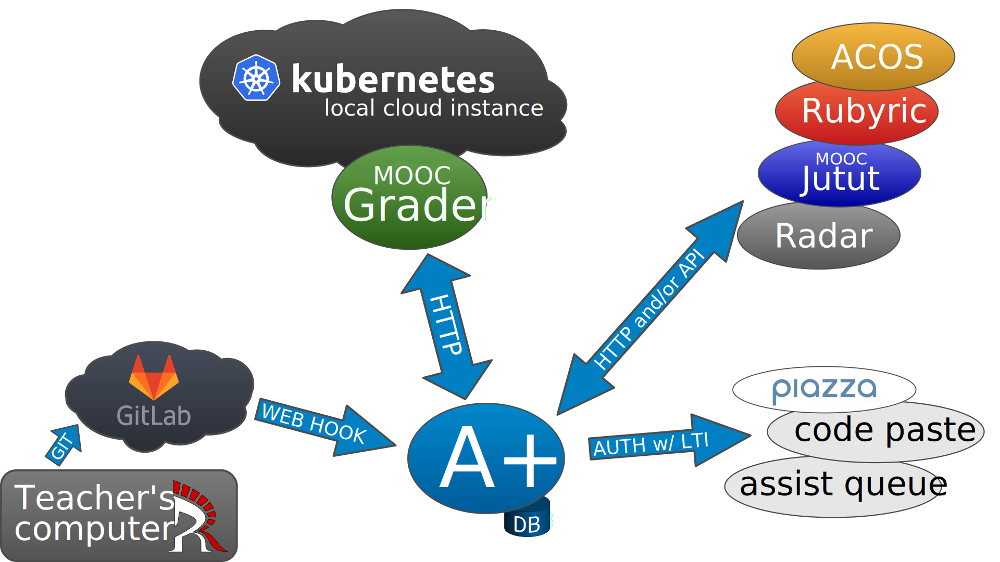
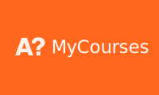

Architecture of A+ LMS
Flexibility from microservices
What is A+ LMS?
A+ is a learning management system.
- Online course material
- Automatic assessment for exercises
- Interactive learning elements
- Exercise point management per student
Why A+ when there is other systems?
- Can safely evaluate code from students
- Student groups created by students themselfs
- Good course material workflow
- Flexible and extendable architecture
- Easy to create new assestment tools
- Easy to connect new external services
Microservices
Why multiple services?
- Each service does one thing well
- Makes system flexible
- Using existing parts is simple
- One course doesn't break others
- Custom tools for single course
A+: the student interface
- User authentication via University IdP or Google
- Does access control (student, assistant, teacher)
- Bookkeeping: exercise points and grade
- Notifications
- handles auth
- access control: student, assistant, teacher
- bookkeeping: points, submissions
- notifications: exercise is graded, feedback from staff
Learning content
- Text material (html & css)
- Exercise (html form / javascript)
- Retrieved from other services
- Represented as part of A+
- A+ doesn't care where the content comes from
- Content is served via A+
- anything that is HTML / CSS / javascript
- submissions tracked by A+
Exercise assessment
- Simple html post and response
- Synchronous assessment (questionnaires)
- Asynchronous assessment (programming exercises)
- Assessment grade is recorded into A+
- Simple protocol
- Easy to create custom grading service
MOOC-Grader
- Safe way to evaluate student code
- Environment defined with Docker images
- Processing pool handled by Kubernetes
- Assessment request from A+
- Asynchronous response when evaluation is completed
Other assessment services
- ACOS - interactive exercises to multiple LMSes
- Rubyric - report assessment, peer review
- MOOC-Jutut - interactive feedbacks
- Radar - plagiarism checking (for code)
- Create more with simple http+form protocol!
External & Utility services
- Piazza - Discussion forum
- Code paste - Tool for students to share snippets
- Assist queue - Fair assistant time use
- Easy to create or connect more services
Material authoring
- Write material in Ariel (reStructuredText)
- or with something else
- Compile material to html and yaml with Roman
- Write unit tests for programming exercises
- ariel - formelly known as a-plus-rst-tools
Test on your machine
- Test early and break things before production
- Develop docker image to work with your exercises
- Rapid development
Push for production
- Manage changes with git
- Push changes to staging
- Push working version to production
Automatic update
A+ and other services are automatically updated
Share material
- Use gitlab/github/etc to share material
- Collaborate with other Universities
- Teacher writes material
- Assistant creates exercise unit tests
A lot of existing work!
Ohjelmointi 1 & 2, Studio 2
Scala exercises
Animated storytelling
JSVEE code animations
Example code annotations
Questionnaires with specific hints
Git tutorial (Studio 2)
Ohjelmoinnin peruskurssi Y1 & Y2
Python exercise
UML modelling (Y2)
A lot of existing work!
Data Structures and Algorithms Y & S.
JSAV visual algorithm exercises
Databases
Relational algebra
SQL queries
Tietotekniikka sovelluksissa
Numpy, Matlab, LabVIEW, SQL, HTML
A lot of existing work!
Mobile Cloud Computing
Assess Android software with a virtual screen
Web Software Development
Assess web code using virtual web browser automation
Exercises submitted as git repository
Nearly anything is possible with containers!

Interoperability
- Microservices are reusable with other LMSes
- For moodle, there is mod_astra. with implementation for core A+ features.
Questions?
More info on
apluslms.github.io